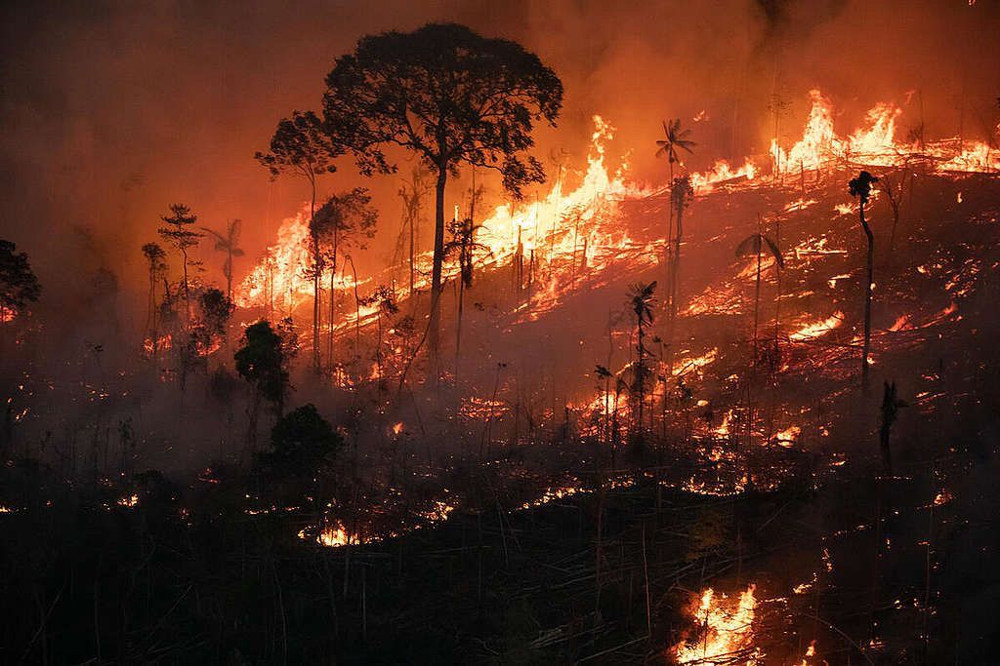
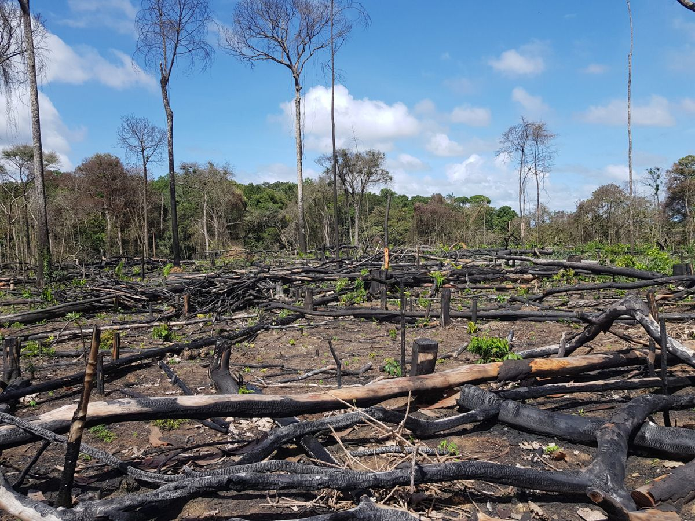

Ética Ambiental é o ramo da filosofia que estuda as relações morais entre os seres humanos e o meio ambiente, buscando estabelecer princípios e valores para guiar a conduta humana em relação à natureza. Surgiu na década de 1970 e lida com questões de sustentabilidade, responsabilidade e cuidado com o planeta, promovendo atenção às gerações futuras.
Os três princípios da ética ambiental são: Prevenção, Precaução e Poluidor-Pagador.
*Prevenção: Tomar medidas para evitar ou minimizar danos ambientais antes que ocorram.
*Precaução: Tomar medidas mesmo quando não há certeza científica sobre os riscos envolvidos.
*Poluidor-Pagador: Responsabilizar os agentes causadores de danos ambientais pelos custos de reparação.
Para uma boa relação entre o homem e a natureza, é necessário conservar o meio ambiente e evitar a poluição. Alguns métodos incluem:
Evitar queimadas descontroladas;
Evitar o abate constante de árvores;
Evitar a poluição do ar e da água. Por exemplo, na província de Tete, a exploração do carvão a céu aberto gera poeira e emissões de gases que afetam a saúde respiratória da população e podem contaminar a água potável, prejudicando a vida aquática.
A ética ambiental é fundamental na sociedade atual. Incentiva ações responsáveis em relação ao meio ambiente, considerando sustentabilidade e interdependências. Pequenas ações diárias, como reduzir o uso de plástico e economizar água, podem fazer grande diferença para a preservação da natureza.